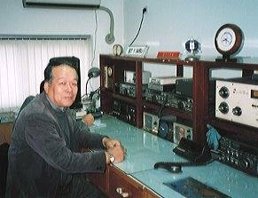
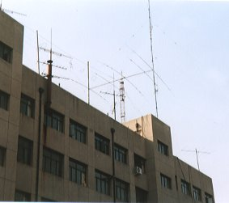
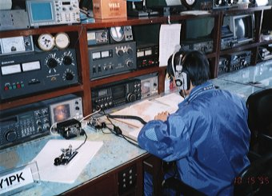
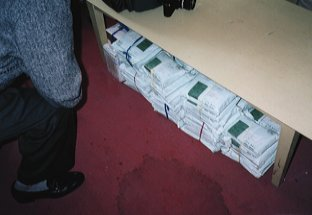
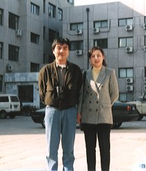

|
【12年ぶりの再会】
10月31日から11月5日にかけて、中国・北京に出掛けて来ました。
中国訪問は、今度で4回目となりますが、純粋に観光目的で訪問するのは今回が初めてでした。
最初に中国を訪れたのは1985年の「第5次JARL訪中団」としての訪問でした。 この時は公式行事のほか、BT1HHL(北京)、
BT4RJU(上海)などの運用が目的で、観光抜きの滞在でした。
それから10年後の1995年、北京で開かれた「第1回 北京インターナショナル・DXコンベンション」に参加。
この時は特別局、BT1Xを「万里の長城」で運用した関係で、初めてこの景勝地を訪れる事が出来ましたが、
その他の時間はミーティング会場につめっきりでした。
そして今年の4月、BS7HのDX-Pediの途中に寄った北京は、素通りでした。
一度は観光地と名の付く所を周って見たいと思っていた矢先、1985年の「第5次JARL訪中団」のメンバーとしてご一緒した、
JF2MBF・市野さんから、今回の“Pedition抜き”の旅行の話を持ち込まれました。
さっそく、“渡りに舟”と、二つ返事で承諾してしまいました。
このときの話で、訪中団当時われわれの英語の通訳をしていただいた、女子大学生の李国珍(Li guo zhen)さんと、
その後も交際を続けて居られることを知り、ぜひ、李さんにお会したいというのも、
北京訪問の目的の一つとなりました。
今回は観光が主目的とはいえ、せっかくの北京滞在なので、BY1PK(CRSAの中央局)を訪れることにしました。
日本を出発する前に、JARL(国際課)を通じて、中国でのアマチュア局の運用許可証を用意して出掛けました。
と、言うわけで今回も観光だけとはいかなくなりました。
【JA1RJU/BY1PKの運用】


JA1RJU/BY1PKを運用中のJA1RJU / 屋上右端が6mの6ELアンテナ
北京に着いた翌日の11月1日、さっそくBY1PKを訪問、JA1RJU/BY1PKのコールサインで14/18MHzで運用しました。
BY1PK(CRSA=中国無線電運動協会=中央局)の無線室は、これまで使っていた場所から、
こじんまりとした新しい別の部屋（同じ建物)に移転したばかりで、HF帯以外は、6mを含め、
サテライトなども、まだ運用も出来ない状態です。
HF帯はIC-780とTS-940が、それぞれ異なるアンテナに接続され、別系統で運用出来る様になっていました。
午後からの短時間の運用でしたが、多くのJA局にコールして頂きましが、残念ながらコンデションはあまり良くなく、
これより高い周波数の24/28MHzはオープンしていませんでした。
6mの運用も期待して出掛けたのですが、アンテナの同軸ケーブルがまだシャックまで引き込まれておらず、
残念ながら聞くことも出来ませんでした。
BY1PKの場合、訪問者は台長のBA1AB・Yanさんの指示によって運用する事になっています。
現在は、日本であらかじめ免許申請を行い、許可書を持参した局にのみ、運用させているとのことです。
日本で中国から運用する許可を申請する際には、運用を希望するクラブ局を記入することになっています。
BY1PKではゲストがオペレートする場合は、相変わらず、1ページ9局記入のログブックを、
カーボン紙でコピーしながらの運用なので思うように局数をさばく事が出来ません。
12年前に訪問した時も同じログでしたので、懐かしさもありましたが運用している時の煩わしさといったらありません。
カーボンコピーは運用者が持ち帰えるのですが、複写が薄く判別が困難な部分もあり、
コピー機の無い時代ならともかく、何とかして貰いたいと思ったのは私だけではなかったでしょう。
BY1PKにコピー機が無いわけではなく、私も途中の3枚ほど、カーボン紙を逆に差し込んで、
コピーが取れないものがあったのですが、運用が終わった後でこの複写失敗の部分をコピー機でコピーしてくれました。
今回運用出来なかった6mのアンテナは、屋上に設置されていましたが、聞くところによると、
1985年に「第5次JARL訪中団」として私達が訪問した際に設置したアンテナを、
今もそのまま使っているとの事！
最近のBY1PKの6mのアクティビティの低下はこんな所にも表われていました。
次回には是非新しいアンテナに交換、6mの運用も可能になる事を期待しBY1PKを後にしました。
今回運用したJA1RJU/BY1PKのQSLは、JA1RJU宛に送って下さい。
【中国のQSLビューロー】
中国のQSLビューローの転送業務は、あまり良く機能していないように思われました。(これはあくまでも、
JARLなどに比べての話ですが)。
前回(1995年)訪問したときも同じだったのですが、
机の下にQSLの梱包が開封される事無くそのまま置かれているのには当時も驚きました。
今回のQSLは全てJARLから届いた物と説明されその量の多さに2度ビックリ。


1995年当時のBY1PKのシャック/JARLから送られてきたQSLカードの山
QSLの処理状況を地元の局に聞いてみたのですが、やはり実体は2年前と変わっていないようでした。
中国では、JARLの転送方法と違って個々に郵送する事はせず、仕分けしたQSLはミーティングなどの時に本人に手渡すか、
直接取りに来た局に渡すだけとの事でした。
現在のCRSAの会員は約7000人(うち約1000人が開局)、年会費は10元(日本円で150円)との事。
日本並のサービスを期待するのが無理と言うものかも知れません。
QSLの処理はどうやら“年単位”で行われるしかないようでした。
運用する側も、QSLの交換にまだ慣れていないのか、QSLに対する認識が薄いように思われました。
一例として、BS7HのDX-PeditionとQSOした中国国内の局からのQSLが、ビューローに沢山届いていましたが、
送り先が不明でストックされていました。
QSLマネジャーの「W4FRU」に送るようアドバイスしましたが、送られたQSLが全てSASEで無かったのが気になりました。
皆さんの手元にQSLが届くのはいつ頃になるのでしょうか。


BY1PKの前で記念撮影
左からBZ1AI、JF2MBF、BA1AJ、JA1RJU、BA1AB、BA1OK
(右)の写真はJF2MBFとBZ1AI・李さん
【中関村の電脳街】
北京市の中心部の天安門から、北西約17Kmほどの中関村という所に出掛けてみました。
ここは知る人ぞ知る「電脳街」と呼ばれる電子機器の安売りの街。
街全体にパソコン関係の店が建ち並ぶ場所です。
雰囲気は日本の“電脳街”秋葉原に似た所ですが、その一軒に入ってみると、
所狭しとパソコン関係の部品が山積みされていて圧倒されます。
ペンティアム関連のボードやメモリー、RAMが日本の3割引きから、半値近い値段で並んでいます。
ここは中国、“海賊版”のメッカなので信頼性には今一つ疑問があるので、
財布の紐をゆるめるには勇気がいりますが物によってはお買い得のものも少なくないようです。
この街を歩いていると、執拗に呼び込みの“お兄さん”が耳元で誘ってきます。
後に付いて裏通りの建物に入ると3畳ほどの小さな部屋に案内されました。
目の前のダンボールの中には沢山のCD-ROMが積まれています。
手に取ってみると、パソコン関係のソフトです。
ゲームソフトは勿論、OS関係、ありとあらゆるソフトが並んでいて、"Microsoft Win-98"?までありました。
これらは全てコピー版、いわゆる“海賊版”なのです。
値段は50元（日本円で約750円）程度で売られているのです。
これらの“海賊版”は日本には持ち込み禁止ですので念の為！。
もちろん正規のルートのものも売られていますので購入したい方は、こちらをお勧めします。
日本よりは安く？手に入ります。
【終わりに】
観光目的の今回の旅行計画でしたが、またもや途中で脱線してしまいましたが、
もちろん当初の予定通り観光地も歩き疲れるほど歩いてきました。
北京を訪れる観光客が必ず立ち寄る、天安門、故宮博物院、天壇公園、い和園などを、
2連式のバス(トロリーバス）、地下鉄、ミニタクシーを乗り継いで歩き回りました。
北京市内だけでも、じっくり見物するには2、3ケ月は掛かるといわれる場所だけに4、5日の滞在では「素通り」に等しいものでした。
今回は、BZ1AI・李さんや、BA1AJ(ex 7J6ABK)・盛さんなど中国の友人にお世話になったお陰で、
一般の観光旅行では体験出来ない中国の生活に触れることが出来、短いながらも有意義な旅行となりました。
中国での運用許可書も1998年末まで使えますので、来年のEsのシーズンにでもまたBY1PKを訪問して、
6mの運用をしてみたいと思っています。【JA1RJU 小笠原 一夫】
|